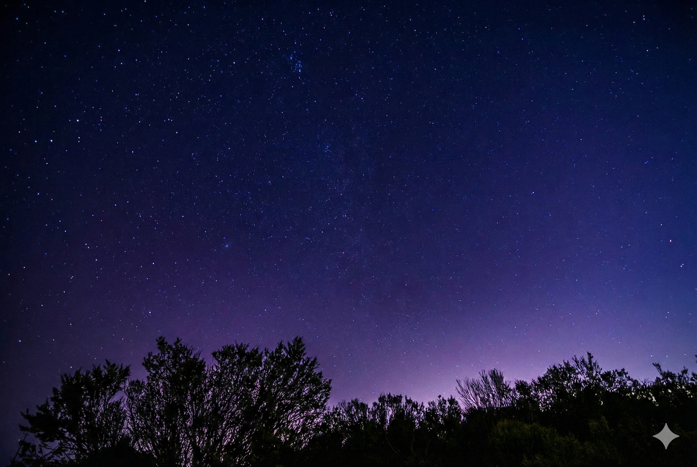
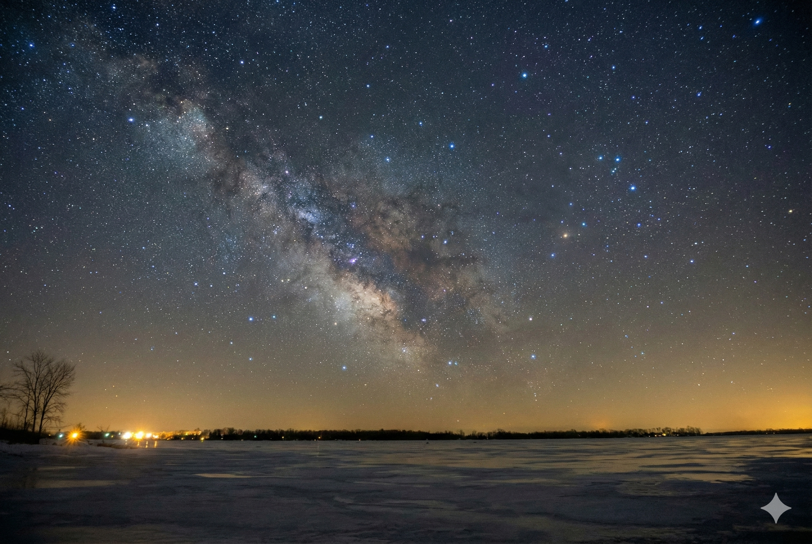
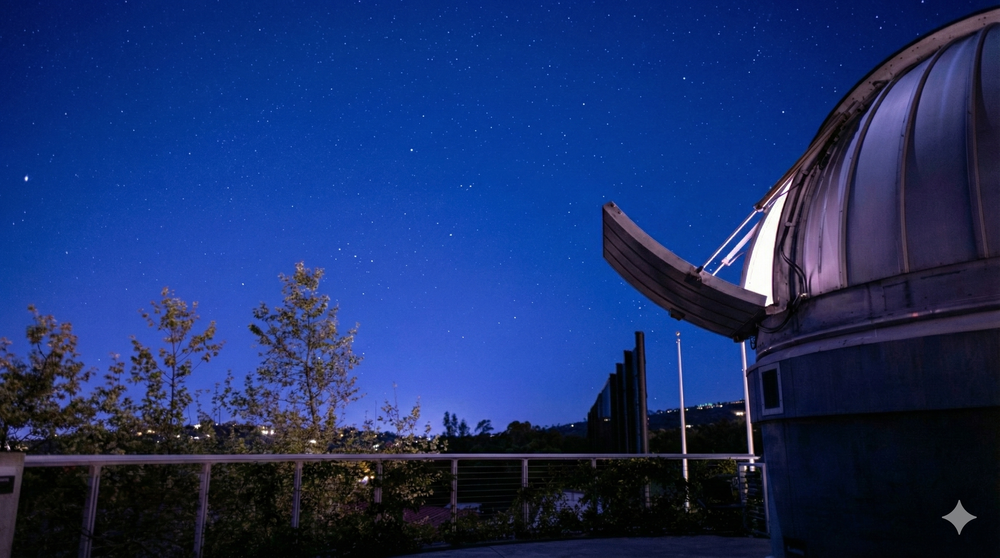

Peak viewing is the night of Dec 22-23, 2025. With a New Moon, conditions are excellent.
From Saratoga, look directly North towards the Santa Cruz Mountains horizon.
Locate the North Star (Polaris). The meteors will appear to radiate from the "bowl" of the Little Dipper.
Saratoga has light pollution (Bortle 5). For the best view, head to these locations.

High elevation on Skyline Blvd. Above the fog layer.

Very close to Saratoga. Good tree cover blocks city lights.

The Planetarium parking lot. Convenient for a quick look.
Perfect conditions. Pack a blanket and hot cocoa.